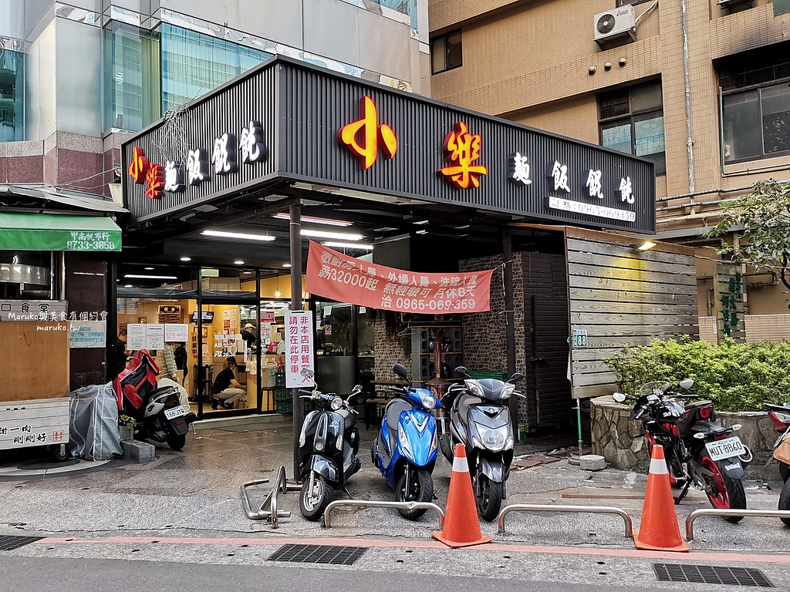
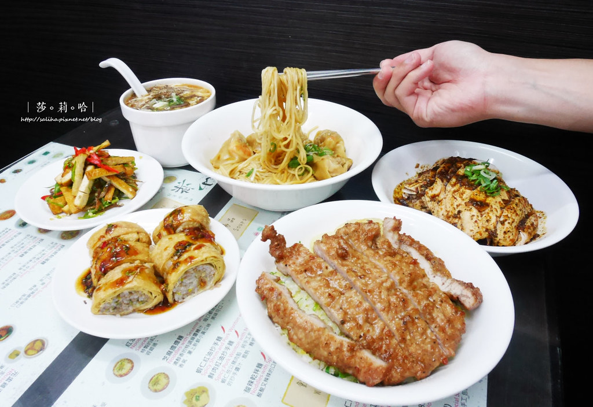

小樂精緻麵食館
google評價：4.1★
店家資訊
地址：新北市新店區寶橋路67號
營業時間：早上11:30至晚上8:30，週六休息
店家電話：02-2910-3237

推薦菜單
獅子頭湯麵120元 鮮肉餛飩湯麵80元 蝦仁餛飩湯麵90元 酸菜肉絲湯麵80元 排骨湯麵120元 酸辣湯麵85元
油豆腐丸子細粉85元 原盅雞湯家乾拌麵160元
獅子頭湯加乾拌麵120元 鮮肉餛飩乾拌麵80元
蝦仁餛飩乾拌麵90元 酸菜肉絲乾拌麵80元
排骨乾拌麵120元 紅油擔擔麵65元 芝麻擔擔麵65元
鮮肉紅油抄手麵85元 酸辣乾拌麵60元 炸醬麵85元
蝦仁肉絲炒飯130元 蝦仁炒飯120元 排骨炒飯120元
肉絲炒飯95元 蛋炒飯65元 招牌鮮肉紅油抄手85元
招牌蝦仁紅油抄手95元 鮮肉餛飩乾拌8顆80元
原盅雞湯130元 獅子頭湯100元 油豆腐丸子湯70元
鮮肉餛飩湯70元 蝦仁餛飩湯80元 青菜豆腐蛋花湯55元
顧客評論
許多人推薦他的排骨蛋炒飯，因為這道菜被稱為新店鼎泰豐，排骨蛋炒飯的分量不小，肉排也很厚，現點現炸，排骨醃的味道沒有很重，但有一點咬勁、厚實，蛋炒飯的部分粒粒分明，只有加了鹽巴調味，但味道還是偏清淡，如果喜歡重口味的話推薦蝦仁紅油抄手，餛飩皮很薄透，可以看到蝦子很大隻，細麵吸附了紅油湯汁，香香辣辣的。